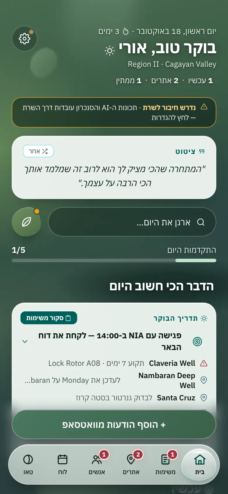
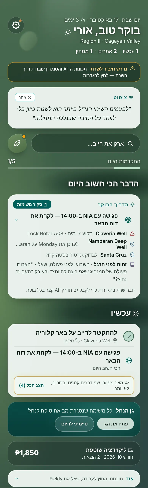
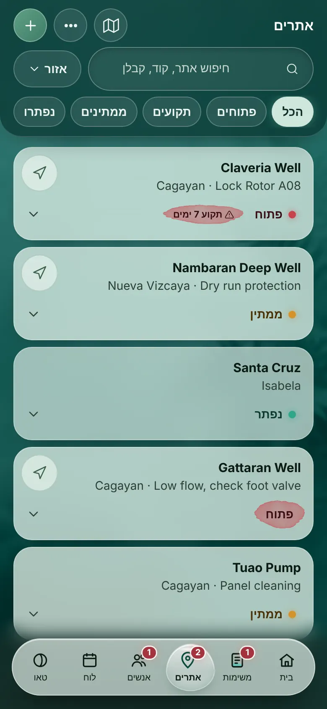
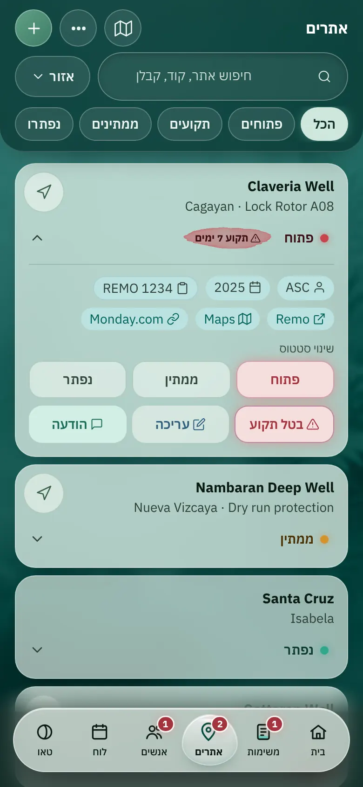
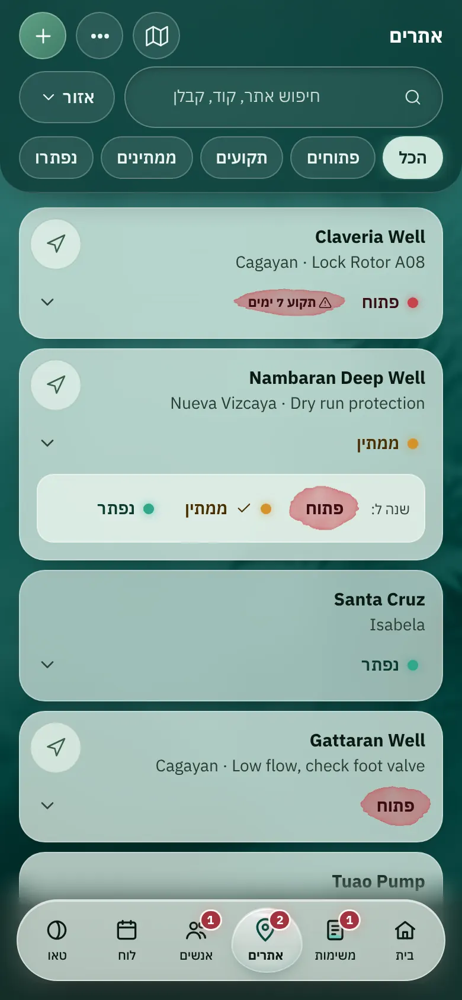
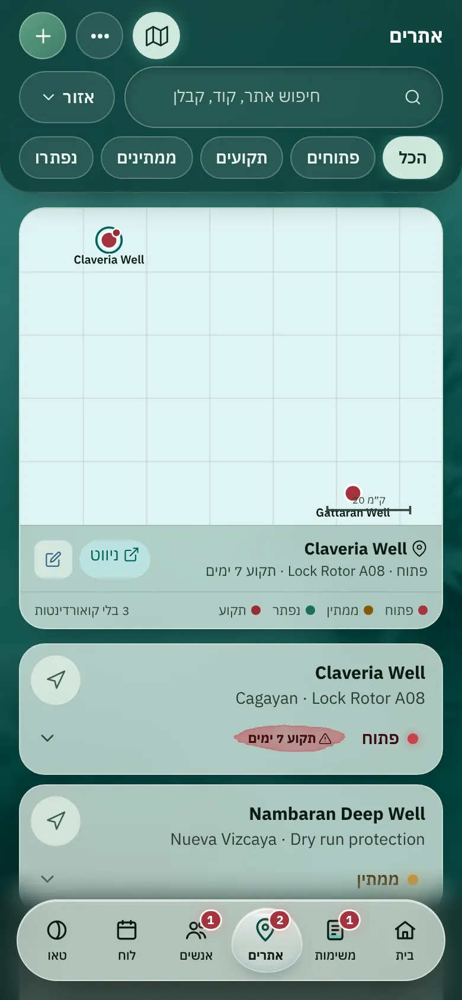
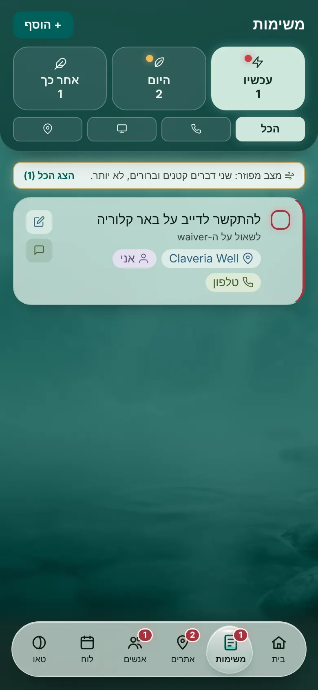

הטלפונים מימין חיים: אפשר ללחוץ על הניווט (טיפת הזכוכית, האדוות והרטט הם הקוד של main), על המשבצות בבית ועל "הצג עוד". הצילום משמאל לכל אחד הוא main עם אותם נתונים.
הניווט: טיפת הזכוכית של main, אותה בכל המסכים. הסגנונות, הסימון והקוד נקראים מ-index.html. השינוי היחיד הוא שהתגים האדומים נשארו רק על משימות.
סטטוס: חרוזי זכוכית קטנים עם הבהוב אור מדי פעם, באותה רוויה: אלמוג לפתוח, ענבר רך לממתין וירקן לנפתר. "תקוע X ימים" הוא כמוסה באלמוג אחיד. המילה תמיד בצבע הדיו. אין כתמי מים, אין נקודות שטוחות ואין טקסט צהוב, כתום או חום. כך באתרים, במגירה, בבורר הסטטוס, במפה, במשימות, באנשים ובגיליונות.
שורת השרת: שורה שקטה בצבע הדיו עם אייקון ענן, בלי פס צהוב.
הבית: פריסת Bento מיד אחרי הברכה. "הדבר הכי חשוב היום" ו"משימות" גדולות, והשאר קטנות. לכל משבצת גוון עדין משלה מטורקיז, אזוב וחול, עם פינות מעט שונות, קצה אור דק וצל רך.
איורים: בגן הנחל 3 חלוקים שמתמלאים. בארגן את היום טבעת התקדמות, שהיא גם ההתקדמות היומית שחזרה לבית. באתרים 3 חרוזים עם מספרים, באנשים עלים, במדריך הבוקר שמש קטנה, ובליקווידציה אייקון שקט. המספרים בפונט עגול (Varela Round). הנתון הראשי הוא מה שדורש תשומת לב, והסך הכול קטן לידו.
שעבר מקום: בורר האנרגיה נשאר בגיליון "ארגן את היום". כפתור העלה לא חוזר. "Region II · Cagayan Valley" יורד מהבית ויעבור להגדרות.
בית
הברכה, ומיד אחריה המשבצות. אין רווח ריק.
לפני (main)

אחרי
בית, כל הדף
שמונה משבצות. לחיצה על כל אחת פותחת גיליון פרטים.
לפני (main)

אחרי
אתרים
חרוז ומילה בכל כרטיס, ו"תקוע" ככמוסת אלמוג. בניווט אין תג על אתרים ועל אנשים.
לפני (main)

אחרי
מגירת אתר
הקישורים בצבע טורקיז כהה ולא זהב. בשינוי הסטטוס יש חרוזים, ו"בטל תקוע" באלמוג אחיד.
לפני (main)

אחרי
בורר הסטטוס
שלוש אפשרויות, כל אחת חרוז ומילה. הנוכחית מסומנת בווי ובקו תחתי.
לפני (main)

אחרי
המפה
הסיכות הן חרוזי זכוכית. לאתר תקוע יש הילה מקווקוות באלמוג, והנבחר מסומן בטבעת טורקיז ולא זהב.
לפני (main)

אחרי
משימות
הנקודות של "עכשיו" ו"היום" הן חרוזים, וקצה הכרטיס באלמוג.
לפני (main)

אחרי
אנשים
"ממתין" הוא חרוז ענבר רך ומילה בצבע הדיו. הכותרת "ממתין תשובה" כבר לא בצבע ענבר.